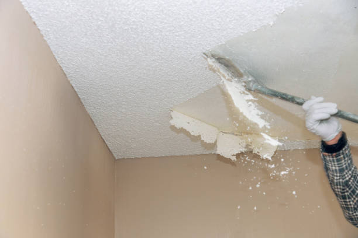
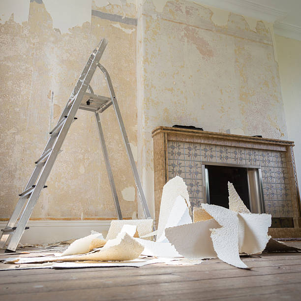

Upgrade your home’s interior with top-notch popcorn ceiling removal in Belleville Illinois . We deliver exceptional results and a clean, contemporary look. Contact us now!
Click Here To Call Us (877) 848-1711Are you tired of the outdated and unattractive popcorn ceilings in your home? At Diva Popcorn Ceiling Removal, we specialize in popcorn ceiling removal services in Belleville Illinois bringing a fresh and modern look to your living spaces. Popcorn ceilings, also known as acoustic or textured ceilings, were popular in the mid-20th century, but they can make a home feel dated and may even lower your property value.
Our expert team in Belleville Illinois is skilled in efficiently and safely removing popcorn ceilings, ensuring minimal disruption to your daily life. We use advanced techniques and equipment to tackle the job, from covering and protecting your furniture to applying the right methods for a smooth finish. Our goal is to transform your ceilings into a sleek, modern surface that enhances the overall aesthetic of your home.
Beyond just improving the appearance, removing popcorn ceilings can also eliminate potential health hazards. Many older popcorn ceilings contain asbestos, which can be harmful when disturbed. Our professionals handle all aspects of the removal process, including any necessary testing and remediation, to ensure a safe environment for you and your family.
Choose Diva Popcorn Ceiling Removal for popcorn ceiling removal in Belleville Illinois and experience top-quality service with exceptional results. Contact us today to schedule a consultation and take the first step towards a beautifully updated home.
Residential & commercial Popcorn ceiling removal
Quality services at affordable prices
Immediate 24/ 7 emergency services


When it comes to removing popcorn ceilings, homeowners in Belleville Illinois can achieve the best results by understanding and selecting the most effective methods. At Diva Popcorn Ceiling Removal, we specialize in providing top-notch solutions for transforming outdated ceilings into sleek, modern surfaces.
The most popular method for popcorn ceiling removal involves a combination of scraping and sanding. This process begins with lightly wetting the ceiling to soften the texture, making it easier to scrape off. Once the majority of the popcorn texture is removed, any residual material is carefully sanded to create a smooth, even surface. This approach is ideal for ceilings that are not contaminated with asbestos.
If your home in Belleville Illinois was built before the 1980s, it's crucial to test for asbestos before starting the removal process. Asbestos-containing materials require specialized removal techniques and safety precautions. For such cases, hiring a certified professional from Diva Popcorn Ceiling Removal ensures compliance with safety regulations and guarantees the safe handling and disposal of hazardous materials.
For those seeking an alternative to traditional methods, chemical removers can be used to dissolve the popcorn texture. This approach, while effective, requires careful application and proper ventilation to avoid potential health risks.
No matter which method you choose, Diva Popcorn Ceiling Removal is here to guide you through the process, ensuring a clean, efficient removal. Our team’s expertise and commitment to excellence make us the premier choice for popcorn ceiling removal in Belleville Illinois . Trust us to revitalize your space and enhance the overall appearance of your home.
Residential & commercial Popcorn ceiling removal
Quality services at affordable prices
Immediate 24/ 7 emergency services
Safety is paramount when it comes to popcorn ceiling removal. Our team is highly trained in safe popcorn ceiling removal ensuring that every project is conducted with the highest standards of safety in mind. We conduct thorough assessments to determine if hazardous materials are present and take all necessary precautions to protect you and your property. Our focus extends beyond the removal; we take great care in minimizing dust and cleanup, making your experience as comfortable as possible. Choose us for your ceiling removal needs and ensure that safety and professionalism go hand in hand.

The choice of contractors can significantly impact the outcome of your project. Our team at Popcorn ceiling removal is recognized as the best popcorn ceiling contractors in Belleville Illinois thanks to our dedication to quality workmanship and customer satisfaction.
What makes us the best? Our commitment to employing only highly skilled and experienced professionals allows us to complete projects with precision. We value transparency, ensuring that you are informed every step of the way. By choosing Popcorn ceiling removal, you gain a partner who truly cares about achieving your vision for your space.
Our local ceiling removal services are centered on understanding and meeting the needs of our community. We provide reliable and efficient removal services tailored to your specific requirements. Our local expertise allows us to navigate the unique challenges presented by the properties in this area, ensuring a smooth and hassle-free process. We prioritize customer communication, keeping you informed at every step and ensuring your vision is realized. Trust us for local ceiling removal done right, with no shortcuts and a focus on quality craftsmanship.

After popcorn ceiling removal, a fresh coat of paint can elevate the space. Our popcorn ceiling painting services in Belleville Illinois can help you achieve the look you desire with professional-quality finishes. Our team uses premium paint products that are durable and designed for ceilings, providing a flawless appearance that enhances your interior design. We take pride in our attention to detail, ensuring that every stroke contributes to a beautiful result. We can also provide guidance on color choices and finishes that reflect your personal style. Choose us for your ceiling painting needs and let your creativity shine through.

Ceiling texture refinishing is an excellent way to improve the appearance of your ceilings without fully replacing them. Our ceiling texture refinishing services can breathe new life into your ceilings, offering various textures to achieve the look you desire.
From knockdown to skip trowel finishes, we can match any aesthetic you're seeking. Our expert team is skilled in the latest refinishing techniques, ensuring that your ceilings receive the care and professional touch they need.
Our popcorn ceiling removal and repair services offer a comprehensive solution for your ceiling problems. If you have damaged popcorn ceilings or want to switch to a different style, our team handles both removal and repair in one seamless process.
We begin by safely removing the texture, assessing any underlying issues, and then competently repairing and refinishing your ceiling. Our commitment to quality craftsmanship ensures a final result that not only looks great but enhances your home's overall value.

Acoustic ceilings can trap dust and diminish the aesthetic of your home. Our acoustic ceiling removal services provide a path to a clean, modern finish. At Popcorn ceiling removal, we specialize in effectively removing these ceilings for homeowners looking to update their interiors .
What benefits can you expect? Our acoustic ceiling removal not only improves aesthetics but also enhances lighting and airflow in your home. We utilize advanced equipment and techniques to minimize mess and ensure safety during the removal process. Trust Popcorn ceiling removal to help you transition to a more modern and stylish home environment with our acoustic ceiling removal services.

In an age of environmental consciousness, our eco-friendly ceiling removal services in Belleville Illinois are a sustainable choice for homeowners and business owners alike. We prioritize the use of green practices and products that are gentle on the environment while efficiently removing popcorn ceilings.
Our process is designed to minimize waste and employs eco-friendly techniques to ensure that your property can transition to an updated finish without harming the planet. By choosing our services, you support sustainable practices while enjoying the benefits of a beautiful, newly renovated ceiling. Join the movement towards greener living with our eco-friendly ceiling removal options.
Years Experience
Expert Technicians
Satisfied Clients
Compleate Projects
When it comes to popcorn ceiling removal in Belleville Illinois Diva Popcorn Ceiling Removal stands out as the premier choice for homeowners seeking excellence and efficiency. Our commitment to delivering high-quality services sets us apart from the competition.
At Diva Popcorn Ceiling Removal, we understand the unique challenges of dealing with outdated popcorn ceilings. Our team of skilled professionals uses state-of-the-art techniques and tools to ensure a smooth and seamless removal process. We prioritize safety and precision, ensuring that every project is completed with minimal disruption to your home. Our process is designed to eliminate the mess and stress commonly associated with popcorn ceiling removal, leaving your space clean and beautifully updated.
We pride ourselves on our exceptional customer service. From your initial consultation to the final touches, our friendly and knowledgeable staff will guide you through every step of the process. We offer transparent pricing with no hidden fees, so you can trust that you’re receiving top value for your investment. Our dedication to customer satisfaction means that we don’t consider a job complete until you’re fully satisfied with the results.
Choose Diva Popcorn Ceiling Removal for your next project in Belleville Illinois and experience the difference that a dedicated, professional team can make. Contact us today to schedule a consultation and let us transform your space with our expert popcorn ceiling removal services.
If you’re searching for “popcorn ceiling removal near me” in the Belleville Illinois area, you’ve come to the right place. Our company specializes in comprehensive popcorn ceiling removal services tailored to meet the unique needs of our local community. Our team of trained professionals understands the importance of creating a beautiful and modern living space free from outdated textures. We utilize state-of-the-art equipment and efficient techniques to ensure a clean and safe removal process.
Why should you choose us? We pride ourselves on our commitment to safety and customer satisfaction. Our experts are equipped to handle any challenges and are knowledgeable in identifying ceilings that may contain asbestos. This ensures the safety of your family and pets during the removal process. We are well-reviewed within the Belleville Illinois community, and our affordable pricing guarantees you won't break the bank to achieve a beautifully updated ceiling.
We understand that home renovation costs can pile up, which is why we offer affordable popcorn ceiling removal . Our pricing model caters to a variety of budgets, making it easier for you to upgrade your home without breaking the bank. We believe in transparency, so you’ll know exactly what to expect without hidden fees or surprise costs. Our efficient teams work diligently to minimize disruption while providing top-notch service. Utilizing cost-effective methods and top-tier materials, we ensure that your ceilings look stunning without the luxury price tag. Choose us for your popcorn ceiling project, and enjoy unparalleled value paired with exceptional results.
Sometimes, removing a popcorn ceiling isn't feasible or necessary. Our popcorn ceiling repair services offer a perfect solution for homeowners who would prefer to restore rather than remove. Our skilled technicians assess damages and work meticulously to match the existing texture, ensuring a seamless repair that preserves the integrity of your ceilings. We take pride in using only the highest quality materials that are compliant with safety standards. Our expertise means we can handle everything from small repairs to large sections with precision. Choose us for your popcorn ceiling repairs, and experience a commitment to quality that ensures your satisfaction every step of the way.
When searching for the best popcorn ceiling removal companies in Belleville Illinois our name should come to mind. We pride ourselves on a reputation built on trust, excellence, and outstanding customer service. Our highly trained professionals are ready to tackle any popcorn ceiling challenge with innovative techniques and industry-leading equipment. We prioritize your needs and comfort, working according to a timeline that suits you. Our comprehensive services include everything from the initial consultation to post-removal clean-up, ensuring that your experience is smooth and satisfying. Choose us, and you’ll see why we consistently top the lists as the best in the business.
Your home is your sanctuary, and it should reflect your style and taste. Our residential popcorn ceiling removal service in Belleville Illinois promises to elevate your living space. As popcorn ceilings fall out of favor, many homeowners are looking to make upgrades that improve both aesthetics and property value.
Our dedicated team is adept at working in residential areas, ensuring that minimal disruption is caused to your daily life. We recognize the importance of adhering to safety protocols, especially if your home has an older ceiling that might contain asbestos. We handle the entire removal process from start to finish, including any necessary cleanup, leaving your home ready for a smooth-ceiling finish or another texture of your choice.
In the heart of any thriving business lies a commitment to aesthetics and a welcoming atmosphere. Our commercial popcorn ceiling removal services aim to enhance your business's professional image. Outdated or damaged ceilings can affect client perceptions and employee morale. That's where we come in—offering tailored solutions that fit your specific business needs, whether it be a retail space, office, or hospitality venue. Our teams work efficiently during off-hours to minimize downtime, ensuring your operations are not affected. With our experience and professionalism, your ceiling will transform into a refreshing and modern space that reflects your brand. Choose us for the expertise and reliability that your business deserves.
When it comes to popcorn ceiling removal, professionalism is key. At Popcorn ceiling removal, we pride ourselves on providing a professional standard that sets us apart. Our team comprises licensed and insured contractors who are highly trained in the nuances of popcorn ceiling removal .
Why choose our professional services? We understand that popcorn ceiling removal is more than just a job; it’s about transforming a space and enhancing your home or office's value and attractiveness. Our systematic approach ensures that every detail is meticulously handled, from preparation to clean-up. With our commitment to quality, you can be confident that your ceiling will be in skilled hands.
Often, hiring local contractors offers benefits that larger companies simply cannot. Our local popcorn ceiling contractors in Belleville Illinois are not only skilled but also have a deep understanding of the community's specific needs. We emphasize personalized service and open communication to ensure your project aligns with your vision.
Our contractors are well-versed in the various styles and textures popular allowing for tailored recommendations that enhance your property's appeal. We provide upfront estimates, so you will never encounter any surprise costs. Trust our local expertise and dedication to transforming your ceilings—making us the preferred choice for many homeowners and businesses .
If your home was built before the 1980s, there is a possibility that your popcorn ceiling contains asbestos. At Popcorn ceiling removal, we are specialists in safe asbestos popcorn ceiling removal, ensuring that we adhere to strict safety regulations and guidelines during the process.
Why trust us with your asbestos removal? Our contractors are trained and certified in asbestos handling and removal, equipped with the necessary safety gear and containment equipment. We conduct thorough testing and inspections before removal to ensure the safety of your household. Choose Popcorn ceiling removal for a safe, reliable, and professional approach to overcoming any issues with asbestos in your ceilings.
After removing an outdated popcorn ceiling, a comprehensive replacement may be the next step in your home renovation process. Our popcorn ceiling replacement services focus on providing stylish and modern ceiling solutions to elevate the overall aesthetics of your interior.
We work closely with you to select the perfect texture or finish that aligns with your vision. Our skilled team ensures that the replacement is executed flawlessly, maintaining high-quality standards throughout the process. With our attention to detail, commitment to craftsmanship, and transparent pricing, you can count on us to deliver exceptional popcorn ceiling replacement services tailored to your needs.
Is your ceiling texture outdated or not your style? Our ceiling texture removal services in Belleville Illinois provide the perfect solution. We specialize in safely removing old textures, including popcorn and other outdated finishes.
Our experienced technicians use specialized tools and techniques to tackle various ceiling textures, carefully preparing your ceilings for a sleek finish. Textured ceilings can often trap dust and allergens, so removing these textures can also contribute to better air quality in your home or office.
Scraping away popcorn ceilings can be a messy task, but with Popcorn ceiling removal's professional popcorn ceiling scraping services, it doesn’t have to be. We use specialized equipment to minimize dust and mess, ensuring a smoother and faster removal process in Belleville Illinois .
What sets our scraping services apart? Our skilled team is equipped to handle all sizes and types of projects, ensuring minimal disruption to your daily life. We pride ourselves on maintaining a clean work environment, removing debris as we go to leave your home looking pristine. Choose Popcorn ceiling removal for thorough and efficient popcorn ceiling scraping.
Once the old, unsightly popcorn texture is removed, refinishing your ceiling can breathe new life into your space. Our popcorn ceiling refinishing services in Belleville Illinois focus on creating a smooth, attractive surface that complements modern aesthetics.
We offer various finishing options, including painting and applying new textures, allowing you to personalize your space perfectly. Our professionals guide you throughout the process, ensuring you understand your options and feel confident in your decisions. With our passion for detail and commitment to customer satisfaction, you can trust us for impeccable refinishing results in Belleville Illinois .
Understanding the costs involved with popcorn ceiling removal can help you budget effectively for your renovation project. Our transparent pricing model means you won’t encounter surprise fees or unexpected costs when working with our team .
During our initial consultation, we provide you with a detailed estimate after assessing your specific requirements. Factors such as ceiling size, condition, and the presence of asbestos are considered. Rest assured, our pricing is competitive, and we strive to deliver the best value without compromising quality. Knowing the popcorn ceiling removal cost upfront allows you to make informed decisions for your home transformation.
Our ceiling popcorn removal services aim to modernize your interiors by eliminating outdated popcorn ceilings. Our team of highly trained professionals ensures that the removal process is efficient and clean, handling debris properly to leave your place spotless.
Utilizing premier equipment and techniques, we can tackle any size project, from small rooms to expansive commercial spaces. The removal will prepare your ceilings for refinishing or painting, ultimately elevating your property’s appeal.
After removing a popcorn ceiling, a smooth ceiling installation can dramatically alter the appearance of any room. Our smooth ceiling installation services in Belleville Illinois focus on the seamless application of new finishes, providing a sleek and modern look for your interiors.
We are equipped with the tools and expertise necessary to install smooth ceilings professionally, ensuring a flawless surface ready for painting or further decoration. With our attention to detail and commitment to quality, you can rely on us for exceptional results that enhance your space. Choose our smooth ceiling installation services for a chic and contemporary upgrade in your home.
If your popcorn ceilings are showing wear and tear, our popcorn ceiling resurfacing services in Belleville Illinois can rejuvenate your space. We offer specialized resurfacing solutions that not only hide imperfections but enhance the overall design of your ceilings. By using quality materials, we bring a fresh look that aligns with your aesthetic preferences. Our team works diligently to ensure that you are involved in the process, providing options and advice to achieve your desired outcome. With our commitment to quality and customer satisfaction, your ceilings will be transformed into stunning features of your home. Trust us for expert popcorn ceiling resurfacing that restores beauty to your living spaces.
Removing popcorn ceilings offers numerous benefits for homeowners in Belleville Illinois . At Diva Popcorn Ceiling Removal, we understand that outdated popcorn ceilings can detract from the beauty and value of your home. Here’s why investing in their removal is a smart choice:
1. Enhanced Aesthetic Appeal: Popcorn ceilings, once popular for their textured appearance, are now considered outdated. Removing them gives your home a modern, sleek look that complements contemporary design trends. Smooth ceilings can significantly enhance the overall appearance of any room, making spaces look larger and more refined.
2. Increased Home Value: A home with updated finishes is more attractive to potential buyers. By removing popcorn ceilings, you increase your home's marketability and value, making it a more appealing option for prospective buyers in Belleville Illinois .
3. Improved Lighting and Brightness: Textured popcorn ceilings can cast shadows and reduce light distribution in a room. Removing them allows for better light reflection and a brighter living space, improving the ambiance and functionality of your home.
4. Easier Maintenance and Cleaning: Popcorn ceilings are notorious for collecting dust and cobwebs, making maintenance a hassle. A smooth ceiling surface is much easier to clean and maintain, reducing your household chores and improving air quality.
5. Eliminate Asbestos Risks: If your popcorn ceiling was installed before the 1980s, it may contain asbestos. Removing it not only updates your home's look but also eliminates potential health hazards associated with asbestos exposure.
At Diva Popcorn Ceiling Removal, we specialize in transforming homes in Belleville Illinois with professional popcorn ceiling removal services. Upgrade your space and enjoy the benefits of a modern, clean ceiling today!
Belleville is a city and the county seat of St. Clair County, Illinois, United States. It is located within Greater St. Louis. The population was 42,404 at the 2020 census, making it the most-populated city in Southern Illinois and in the Metro East region of Greater St. Louis. Due to its proximity to Scott Air Force Base, the population receives a boost from military and federal civilian personnel, defense contractors, and military retirees. It is also the seat of the Roman Catholic Diocese of Belleville and the National Shrine of Our Lady of the Snows.
If asbestos is found, we follow strict safety protocols for safe removal and disposal, ensuring your home remains safe .
Yes, we offer ceiling repair services to fix any issues that may arise during the removal process in Belleville Illinois .
Yes, Diva Popcorn Ceiling Removal is experienced in removing popcorn textures from all types of ceilings, including vaulted ceilings, .
While possible, DIY removal can be dangerous, especially if asbestos is present. It’s best to hire professionals like Diva Popcorn Ceiling Removal .
Yes, removing outdated popcorn ceilings can significantly improve your home’s aesthetics and market value .
Yes, we offer ceiling painting services to ensure a smooth, finished look after the popcorn ceiling removal .
For small jobs, it may be safe to stay in the home. However, for larger projects, we recommend leaving the area to minimize exposure to dust .
Smooth ceilings or knockdown textures are popular, modern alternatives to popcorn ceilings .
Yes, Diva Popcorn Ceiling Removal can arrange for asbestos testing, which is recommended for homes built before 1980 .
We use specialized scraping tools, vacuums, and protective gear to ensure efficient and clean popcorn ceiling removal in Belleville Illinois .
Yes, it can be messy, but Diva Popcorn Ceiling Removal takes every precaution to minimize dust and mess, using protective coverings and specialized equipment .
After popcorn removal, the ceiling typically takes 24-48 hours to fully dry before painting or further work can be done .
No, removing popcorn ceilings typically does not affect the insulation in your home in Belleville Illinois .
Popcorn ceilings have a rough texture, while knockdown ceilings have a smoother, more modern finish. We can remove popcorn and apply knockdown texture .
Peeling, cracking, or discoloration are signs your popcorn ceiling should be removed. It may also contain asbestos if installed before 1980 .
Yes, we offer discounts for larger projects or multiple rooms. Contact us for more details .
The cost varies depending on the size and complexity of the job, but our rates are competitive for Belleville Illinois . Contact us for a free estimate.
Properly done, it won’t damage your drywall. Our experts ensure that your ceiling remains intact after removing the popcorn texture .
Yes, Diva Popcorn Ceiling Removal is fully licensed and insured, providing you with peace of mind for all projects .
Yes, Diva Popcorn Ceiling Removal offers free, no-obligation estimates for all popcorn ceiling removal projects .
While painting is an option, removing the popcorn ceiling offers a smoother, more modern finish, and addresses potential asbestos concerns .
Popcorn ceiling removal involves scraping off textured ceilings to create a modern look. It can increase your home’s value and remove potential health hazards like asbestos .
We carefully remove or protect all electrical fixtures before starting the popcorn ceiling removal process in Belleville Illinois .
You can repaint your ceiling within 24-48 hours after the removal process, depending on how quickly it dries .
Yes, it’s best to remove furniture from the room. If this isn’t possible, Diva Popcorn Ceiling Removal will cover everything to protect it during the process .
We use advanced dust containment systems and cover the workspace to minimize airborne particles during popcorn ceiling removal .
We cover floors, walls, and furniture with protective materials to minimize dust and debris during popcorn ceiling removal .
The time frame depends on the size of the project. Typically, it takes 1-3 days for most residential popcorn ceiling removal projects in Belleville Illinois .
Yes, Diva Popcorn Ceiling Removal is equipped to handle popcorn ceiling removal in various building types, including high-rise apartments in Belleville Illinois .
Our experience, attention to detail, and customer satisfaction guarantee make us the top choice for popcorn ceiling removal .
Diva Popcorn Ceiling Removal provided top-notch service in Belleville Illinois . Their expertise and attention to detail are evident in the finished product. The team was punctual and very professional. My ceilings look fantastic, and I couldn’t be happier! – Brian C.
Profession
I’m thrilled with the results from Diva Popcorn Ceiling Removal in Belleville Illinois . They removed my popcorn ceilings quickly and left no mess behind. The team was friendly and professional, making the whole process smooth. My home looks fantastic now! – Emily W.
Profession
Diva Popcorn Ceiling Removal provided excellent service in Belleville Illinois . The team was professional and completed the job with great attention to detail. The new look of my ceilings is fantastic, and I’m very pleased with their work. – Logan G.
Profession